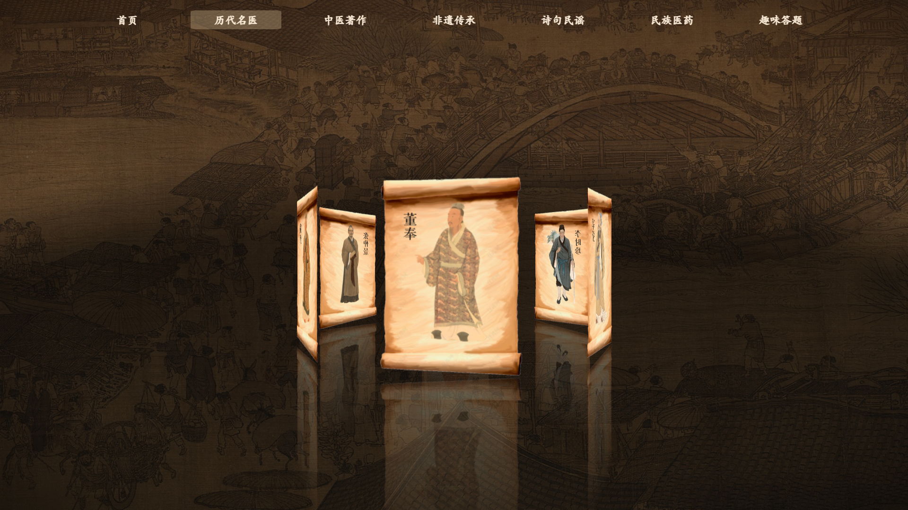
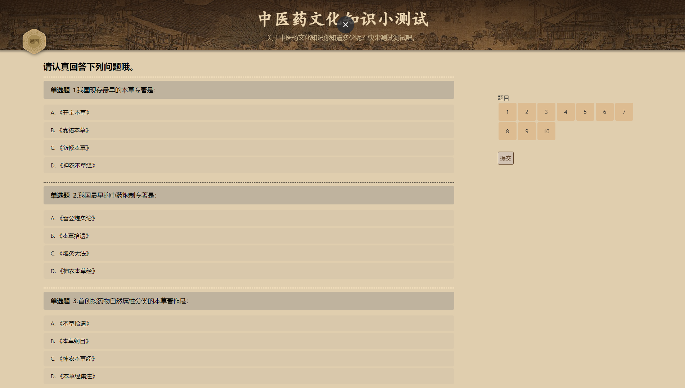

刚柔交错，天文也。文明以止，人文也。
观乎天文，以察时变。观乎人文，以化成天下。
中医药是我国的医学精髓，是中国传统文化的重要组成部分。这是一个为了让更多人了解到中医药相关文化的网站。
点击了解
文化
中医药文化是中华民族优秀传统文化中体现中医药本质与特色的精神文明和物质文明的总和。
价值
中医药学凝聚着深邃的哲学智慧和中华民族几千年的健康养生理念及其实践经验，是中国古代科学的瑰宝，也是打开中华文明宝库的钥匙。
传承
传承中医药，其核心是为群众提供优质的中医服务，解决健康问题，让人民群众在中医药的疗效中，对中医药从认知到认可，再到喜爱，从而影响其就医习惯。
渊源历史
中医起源最早可追溯到公元前4000年，如今中医药已形成了一套成熟的中医药理论体系框架。
杰出人物
在中医发展过程中，涌现了如扁鹊、华佗、李时珍等众多对中医药发展有着杰出贡献的人物。

文化传承
中医药涵纳着大量的实践观察、 知识体系和技术技艺，凝聚着中华民族强大的生命力与创造力，是中华民族智慧的结晶，也是全人类文明的瑰宝，应该受到更好的保护与利用。
中医典籍
中医典籍对中医发展起到了重要作用，其中四大经典对古代乃至现代中医都有着巨大的指导作用与研究价值。
诗句民谣
诗句民谣记录大量中医常识，对现在都具有极大的参考意义和学习价值。
民族医药
我国民族众多，在数千年的文明发展中，各民族医药也随之发展，其中苗医和藏医已经形成产业，规模日益壮大，其他几种民族药通过国家和民间的保护也得到挽救和发展。

趣味答题
走进中医，中医在你眼中知多少呢？浅浅测试你对中医了解多少呀！
团队信息
郑昊洋 zhenghaoyang24@qq.com
陈立峰 2496230222@qq.com
刘飞扬 2898394329@qq.com